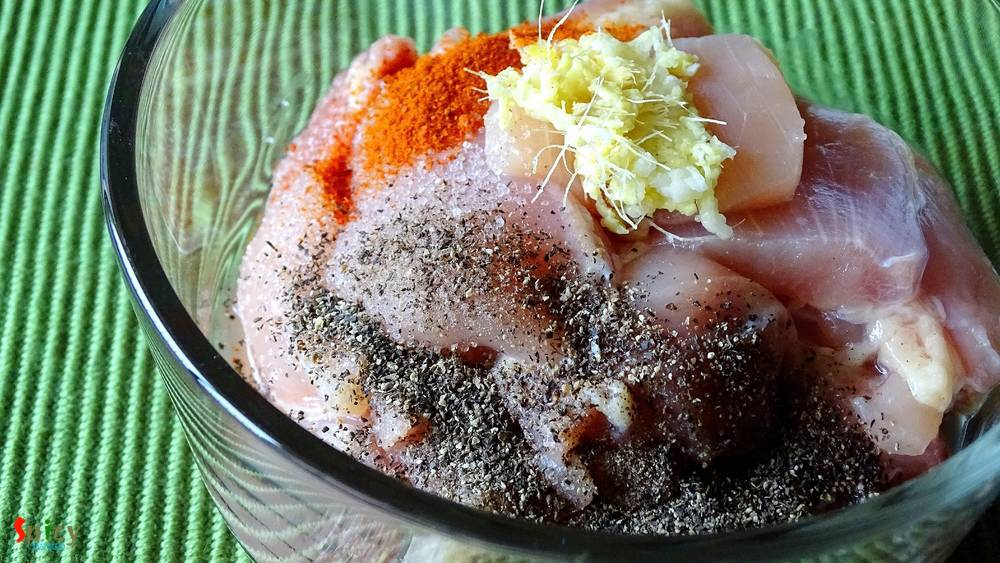
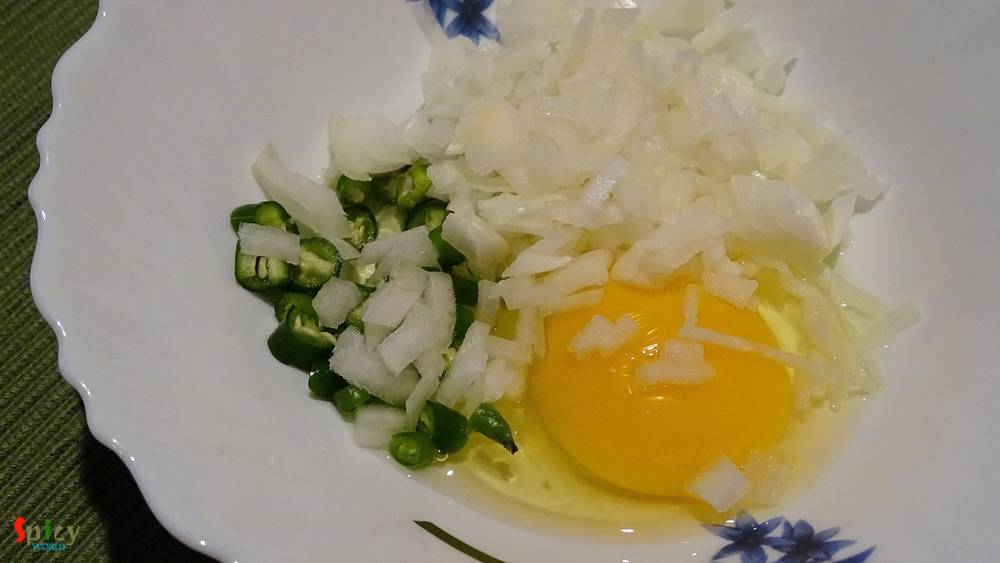

Simple and Easy Recipes
Chicken Pokora (Pakora) / Chicken Fritters
© 2016 Spicy World, Published on: Jan 4, 2016
How about a crazy snack in evening?? Ohh yeaah its Pakora time!! This is the perfect 'pokora' recipe ever. In Kolkata we get this kind of chicken pokora from fast food centers. But according to me the best homemade pokora maker is my mom. My friends, our relatives, everyone is a fan of my mom's pokora. They always become spicy, soft, juicy and yummy. If you follow this recipe you can get the same flavour from your pokora.
 / Chicken Fritters")
Ingredients
- 15 boneless chicken medium size pieces.
- 2 Teaspoons of lemon juice.
- half Teaspoon of red chilli powder.
- 1 Teaspoon of black pepper powder.
- half onion finely chopped.
- 1 Teaspoon of ginger and garlic paste.
- 2 green chilies chopped.
- 1 egg.
- 10 Tablespoons of Cornflour.
- Salt to taste.
- White oil for deep fry.
 / Chicken Fritters")
Steps
Wash the chicken pieces well with water, then pat dry them.
Marinate the chicken pieces with lemon juice, red chilli powder, ginger and garlic paste, some salt and 1 Teaspoon black pepper powder. Keep it in the refrigerator for 1 hour.
Take a bowl.
Add 1 egg, chopped onion and chopped green chilies. Mix everything very well.
Then add cornflour little by little. Mix this well.
Dont add water in the mixture. If this become too runny you can add some more cornflour.
Take a chicken piece, dip into the mixture and put into the hot oil. Fry it for 4-5 minutes.

Fry rest of them.
Now again take the fried chicken, dip it into the batter.
Put them in hot oil and fry for 4-5 minutes or golden in color.
Sprinkle some chat masala and serve.
Your Chicken pakora is ready ...
Enjoy this hot with onion slices and some ketchup ...
 / Chicken Fritters (Final)")